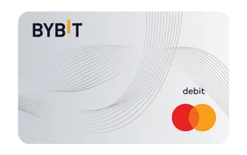

Mit diesem Bitcoin Trick bekomme ich 600 Euro im Jahr
Wenn du sowieso Geld für Einkäufe, Reisen, Tanken oder Online-Shopping ausgibst, kannst du dir damit regelmäßig Cashback zurückholen. Die Karte ist nur das Werkzeug, der eigentliche Punkt ist das Ergebnis: jeden Monat mehr Geld zurückbekommen.

So einfach sieht das Ganze aus
- Einmal anmelden und verifizieren
- 100 Euro per IBAN einzahlen
- Karte aktivieren und mit normalen Ausgaben bezahlen
- Direkt Cashback sammeln, bis zu 50 Euro pro Monat
So startest du in wenigen Minuten:
Zugang freischalten
Öffne die Bybit Card Seite, klicke auf „Hol dir deine Karte“ und danach auf „Registrieren“. Damit legst du die Grundlage, um dir später direkt Cashback zu sichern.
KYC abschließen
Lade deinen Ausweis hoch und schließe das KYC vollständig ab. Das ist der kurze Pflichtschritt, damit du die Karte aktivieren und das Cashback-System nutzen kannst.
100 Euro einzahlen
Gehe auf Deposit und dann auf Top up via IBAN. Dort siehst du deine IBAN und den Verwendungszweck. Sende mindestens 100 Euro dorthin, dann liegt das Geld kurze Zeit später im Hauptkonto.
Mit normalen Ausgaben Cashback verdienen
Aktiviere die Karte und hinterlege sie bei Google Pay oder Apple Pay. Danach kannst du sofort mit deinen normalen Alltagsausgaben loslegen und direkt Cashback sammeln.
Wenn du Auto Cashback deaktivierst, bekommst du dein Cashback in Punkten. Ab 10.000 Punkten kannst du einen 25 Euro Gutschein einlösen, das ist das höchstmögliche Cashback.
Wenn du dein Cashback lieber direkt erhalten willst, kannst du es alternativ direkt in Bitcoin oder USDC bekommen.
Die wichtigsten Fragen kurz beantwortet
Muss ich das erhaltene Cashback versteuern?
Das Thema Krypto‑Cashback ist in Deutschland rechtlich derzeit noch eine Grauzone. Es gibt jedoch eine einfache Möglichkeit, auf Nummer sicher zu gehen: Wenn du dir den Gegenwert faktisch in Euro (z. B. als Gutschein) auszahlen lässt, sollte dies in der Regel steuerfrei sein. So stellst du das in der App ein: Gehe in die Einstellungen zum Bereich „My Rewards“. Deaktiviere die Funktion „Automatisches Cashback“. Dein Cashback wird nun nicht mehr direkt in USDC ausgeschüttet, sondern du sammelst stattdessen Punkte. Sobald du 10.000 Punkte erreicht hast, kannst du diese gegen einen 25 € Gutschein eintauschen. Hinweis: Dies stellt keine verbindliche Steuerberatung dar. Im Zweifel solltest du immer einen Steuerberater konsultieren.
Wie sichere ich mir die 10 % Cashback im ersten Monat?
Im ersten Monat nach Anmeldung hast du die Chance, durch ein erhöhtes Cashback einen ordentlichen Bonus abzuräumen. Um den 10 % Booster zu aktivieren, musst du innerhalb von 30 Tagen nach Genehmigung deiner Karte eine Netto‑Einzahlung von mindestens 100 $ (oder dem Gegenwert) machen. So gehst du danach vor, um die 10 % Cashback im ersten Monat zu erhalten: Für das Cashback im ersten Monat gibt es eine Sonderregel. Um es zu bekommen, musst du das Guthaben nicht in Euro halten, sondern in Krypto umwandeln. Wandle dein eingezahltes Guthaben in der App in USDC (oder eine andere unterstützte Kryptowährung) um. Mit Krypto bezahlen (wichtig!): Die 10 % gelten nur für Zahlungen, die mit Krypto gedeckt sind. Wenn du Fiat (Euro) im Finanzierungskonto hast, wird dieses immer zuerst verwendet. Tipp: Verschiebe dein Fiat‑Guthaben in dein Unified Trading Account (UTA), damit die Karte sicher auf dein USDC‑Guthaben zugreift. Kategorien: Du erhältst satte 10 % Cashback auf Zahlungen in den Bereichen Restaurants & Cafés, Reisen (Hotels, Airlines), Transport (Nahverkehr, Tankstellen), Mode sowie Beauty & Wellness. Basis‑Cashback: Für alle anderen Ausgaben und Ausgaben, die nicht mit Krypto, sondern mit Euro getätigt werden, erhältst du weiterhin starke 2 % Cashback.
Wie hoch ist das maximale Cashback bei der 10 % Aktion?
Das Limit hängt davon ab, ob du komplett neu bist oder schon vorher bei der Plattform aktiv warst: Neukunden: Bis zu 150 € Cashback (du hast vor der Kartenbeantragung noch nie Geld eingezahlt). Bestandskunden: Bis zu 75 € Cashback (du hast schon vorher Geld eingezahlt, beantragst die Karte aber zum ersten Mal).
Gibt es Ausnahmen, für die ich kein Cashback erhalte?
Ja, um Missbrauch zu vermeiden, sind bestimmte Transaktionen vom Cashback ausgeschlossen. Dazu gehören vor allem: Aufladungen von Konten/E‑Wallets (z. B. Überweisungen zu Revolut, Wise oder Astropay), persönliche Geldtransfers (z. B. über Alipay oder WeChat) sowie Transaktionen für das Tomorrowland‑Festival. Wichtiger Zeit‑Hinweis: Damit eine Zahlung für das Cashback im ersten Monat zählt, muss sie innerhalb der 30‑Tage‑Frist nicht nur getätigt, sondern vom Händler auch final abgebucht („posted“) worden sein.
Wie erhalte ich Abos wie Netflix, Spotify, Amazon Prime, ChatGPT und TradingView kostenlos?
Du kannst dir die Kosten für verschiedene beliebte Abonnements dauerhaft erstatten lassen. Die Bedingung dafür ist ganz einfach: Du musst im ersten Monat nach Erhalt der Karte einen Umsatz von mindestens 500 € erreichen. Sobald du das geschafft hast, qualifizierst du dich für den Alpha‑Status und bekommst im nächsten Monat Dienste wie Netflix, Spotify, TradingView, Amazon Prime und ChatGPT 100 % erstattet, wenn du sie mit der Karte bezahlst. Wichtig: Der Maximalbetrag für alle Erstattungen zusammen ist im Alpha‑Status auf 50 € (pro Monat) gedeckelt.
Profi‑Tipp: Wie kann ich noch mehr Cashback bekommen?
Nutze zwei Karten im Haushalt: Du kannst z. B. 500 € Umsatz auf deinen Account und weitere 500 € auf den Account deiner Partnerin/Familie verteilen. Teile die Abos auf: z. B. Netflix und TradingView über dich, ChatGPT und Spotify über die Partnerin. So lässt sich der maximale Cashback optimal ausschöpfen. Im Best‑Case sind so sogar bis zu 100 € Cashback pro Monat möglich – selbst mit ganz normalen Ausgaben.
Gibt es einen Willkommensbonus?
Ja! Unabhängig von den oben genannten Aktionen gibt es noch einen kleinen Startbonus: Sobald du mit deiner neuen Karte die ersten 100 € Umsatz erreicht hast, wird dir automatisch ein einmaliger Bonus in Höhe von 10 € gutgeschrieben.
Wer kann an den Aktionen teilnehmen?
Die Aktionen gelten für Einwohner der Europäischen Union, die mindestens die Identitätsprüfung (Verification Lv. 1) abgeschlossen haben. Ausnahmen: Einwohner von Kroatien und Irland sind ausgeschlossen. Für Österreich gilt: Nur Nutzer, die sich nach dem 12. September 2025 registriert haben, sind teilnahmeberechtigt.